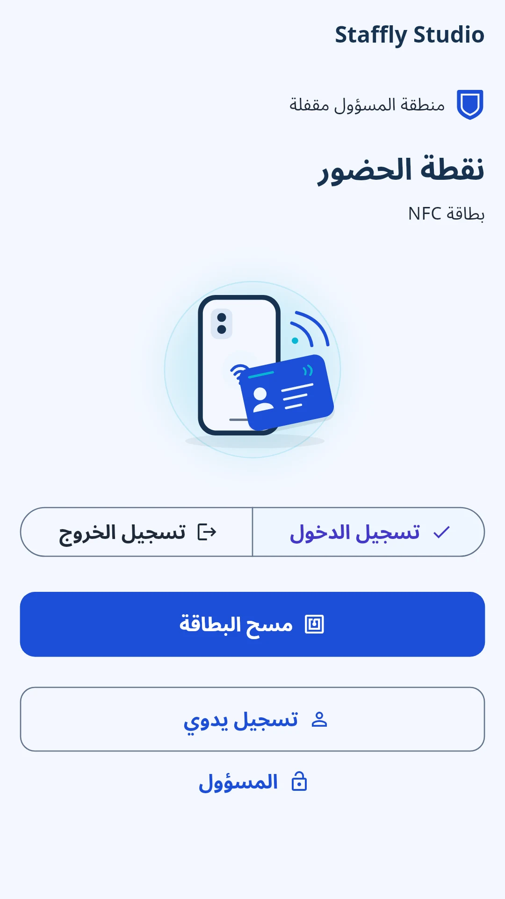
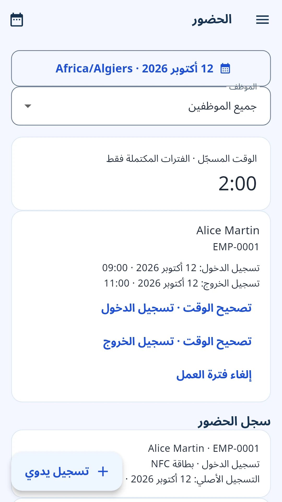
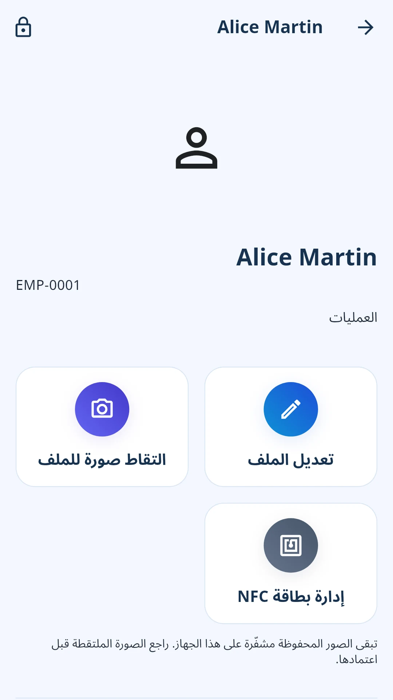

بسّط متابعة الحضور اليومي
من أول تسجيل دخول إلى آخر استراحة، تابع يوم العمل بسهولة.
أدر الموظفين والحضور والإجازات والأجور الإجمالية من جهاز واحد مشترك في مكان العمل، حتى عندما لا يتوفر الإنترنت.


من أول تسجيل دخول إلى آخر استراحة، تابع يوم العمل بسهولة.
الموظفون والجداول والإجازات، كل شيء في مكانه على جهاز واحد في مكان العمل.
حوّل السجلات اليومية إلى ملفات واضحة وأجور إجمالية ومستندات مفيدة.
إدارة عملية للموظفين، دون بنية تقنية معقدة.
اجمع المعلومات المهمة لتتمكن من التركيز على الأشخاص الذين يدعمون أعمالك.

تسجيل بسيط يمنحك صورة أوضح لليوم. استخدم بطاقات NFC المتوافقة أو أدخل التسجيلات يدوياً.
نظّم الجداول الأسبوعية وتعيينات الموظفين، مع الاستثناءات عند تغير الخطط.
اجمع قرارات الإجازات والتقويمات والأرصدة مع مرونة تناسب أعمالك.
أعد الأجور الإجمالية وفق معدلات بالساعة أو باليوم أو بالشهر، وسجّل المدفوعات التي تمت بالفعل.
صدّر بيانات العمل عندما تحتاج إلى مراجعتها أو حفظها أو مشاركتها.
جهّز مكان عملك مرة واحدة. واحتفظ بالأساسيات في متناولك.
اختر بيانات المؤسسة واللغة والعملة والمنطقة الزمنية.
أضف موظفيك واختر بطاقات NFC أو التسجيل اليدوي.
راجع الحضور وأدر الإجازات وصدّر التقارير التي تحتاج إليها.
وصول شخصي اختياري يمنح الموظفين نظرة واضحة على وقت عملهم، وليس بيانات زملائهم.
حدّث سجلاتك بالقرب من جهاز مكان العمل باستخدام Bluetooth وWi-Fi. لا حاجة إلى جهاز توجيه. تبقى أحدث السجلات المُنزّلة متاحة بعد ذلك.
حماية عملية وتحكم محلي، دون الاعتماد على الإنترنت في كل يوم عمل.
استخدم مصادقة الجهاز المدعومة أو رمز PIN الخاص بـ Staffly.
سجلات الموظفين وصورهم مشفّرة على جهازك.
أدر النسخ الاحتياطية المحمية بكلمة مرور بنفسك.
ملفات مقروءة تختار حفظها أو مشاركتها.
تعمل وظائف الموارد البشرية الأساسية دون إنترنت. تتطلب الإعلانات والمشتريات والتحقق من الاشتراكات اتصالاً بالإنترنت.
جميع وظائف الموارد البشرية الأساسية مشمولة. يزيل Pro الإعلانات ببساطة.
تظهر تفاصيل الفوترة والتجديد قبل الشراء.
التفاصيل العملية، قبل أن تبدأ.
نعم. تعمل وظائف الموارد البشرية الأساسية دون إنترنت. تتطلب الإعلانات والمشتريات والتحقق من الاشتراكات اتصالاً بالإنترنت.
لا. يمكن لهاتف أو جهاز لوحي Android واحد مشترك في مكان العمل معالجة التسجيلات. الوصول الشخصي للموظفين اختياري وقادم في الإصدار التالي.
لا. يمكنك إدخال التسجيلات يدوياً. توفر بطاقات NFC المتوافقة خياراً آخر إذا كان جهاز مكان العمل يدعم NFC.
نعم. يمكنك تصدير الحضور والإجازات والجداول والأجور إلى Excel. يتوفر أيضاً تصدير CSV لبعض السجلات ومكتبة مخصصة للمستندات المُنشأة.
لا. يحسب Staffly الأجور الإجمالية ويسجّل المدفوعات التي تمت بالفعل. لا يحسب الضرائب أو المساهمات القانونية ولا يحوّل الأموال.
تُحفظ سجلات الموظفين وصورهم في التخزين المحلي المشفّر للتطبيق على جهاز مكان العمل. تتحكم أنت في النسخ الاحتياطية المحمية بكلمة مرور وتختار ملفات التصدير المقروءة التي تريد حفظها أو مشاركتها.
لا. وصول الموظفين مُعدّ للإصدار التالي من Android. يتطلب تحديث السجلات المسموح بها التواجد بالقرب من جهاز مكان العمل باستخدام Bluetooth وWi-Fi. يمكن قراءة السجلات التي سبق تنزيلها لاحقاً دون إنترنت.
Android هو النظام الذي يتم الترويج له حالياً. لا يوجد موعد مؤكد لإصدار iPhone.
يوفر Staffly Pro وظائف الموارد البشرية نفسها دون إعلانات. تظهر خطط الاشتراك الشهرية أو السنوية والأسعار الحالية وتفاصيل الفوترة والتجديد في التطبيق قبل الشراء.
يوم عمل أكثر تنظيماً يبدأ مع Staffly.
احصل على Staffly من Google Playمتوفر لأجهزة Android